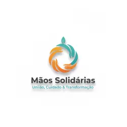
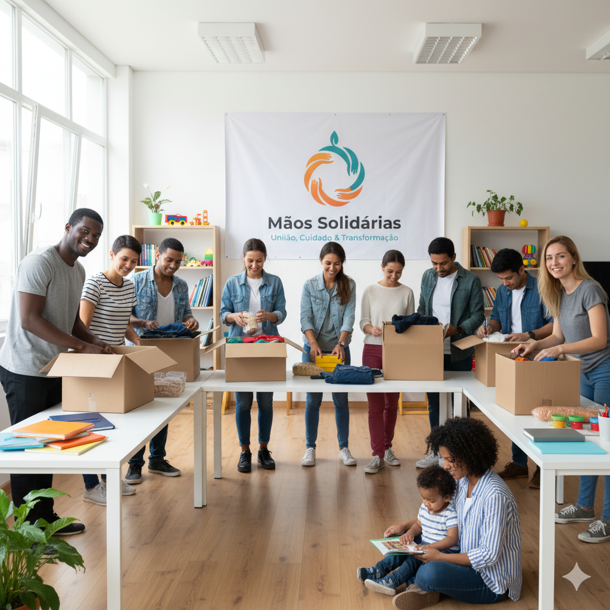

15.000+
Pessoas impactadas

Somos uma organização sem fins lucrativos dedicada a promover o bem-estar e a dignidade de pessoas em situação de vulnerabilidade.

Fundada em 2020, a ONG Mãos Solidárias é uma organização sem fins lucrativos dedicada à transformação social através de ações concretas e impactantes. Já impactamos mais de 15 mil vidas através de nossos programas estratégicos de educação, saúde, segurança alimentar e inclusão social.
Nossa atuação acontece principalmente em comunidades carentes nas periferias urbanas, com foco especial em crianças, adolescentes, idosos e pessoas em situação de rua. Trabalhamos com uma equipe multidisciplinar composta por profissionais voluntários e remunerados, garantindo a qualidade e continuidade de nossos projetos.
Somos certificados como OSCIP (Organização da Sociedade Civil de Interesse Público) e registrados no Conselho Nacional de Assistência Social (CNAS). Mantemos total transparência em nossas ações e prestamos contas regularmente à comunidade e aos órgãos competentes.
Pessoas impactadas
Voluntários ativos
Programas sociais
Anos de atuação
Promover a transformação social de comunidades em vulnerabilidade através de ações integradas de educação, saúde e desenvolvimento humano, garantindo o exercício pleno de direitos e dignidade para todas as pessoas.
Ser uma organização de referência em transformação social, reconhecida pela qualidade, efetividade e impacto de seus projetos, atuando como ponte entre a sociedade civil e as pessoas em situação de vulnerabilidade.
Quando você apoia nossa organização, você não está apenas doando dinheiro ou tempo. Você está investindo em pessoas, em futuros mais brilhantes, em comunidades transformadas. Cada ação sua gera um efeito multiplicador incrível.